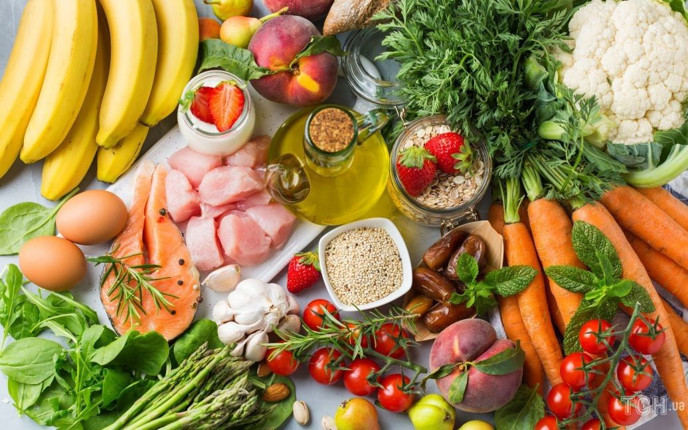
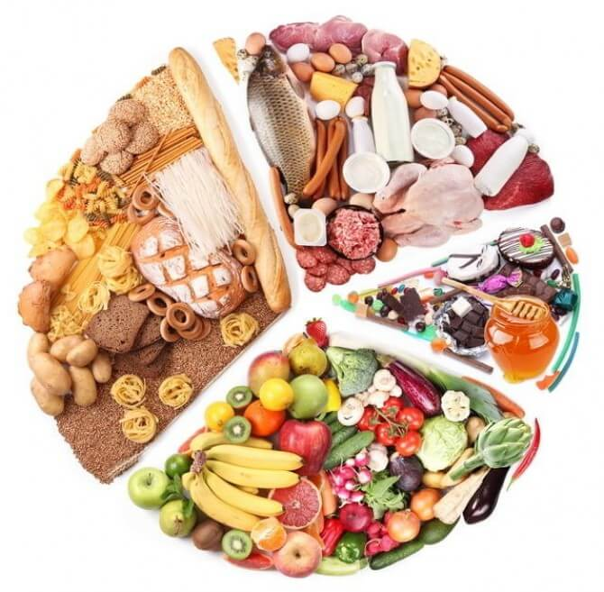
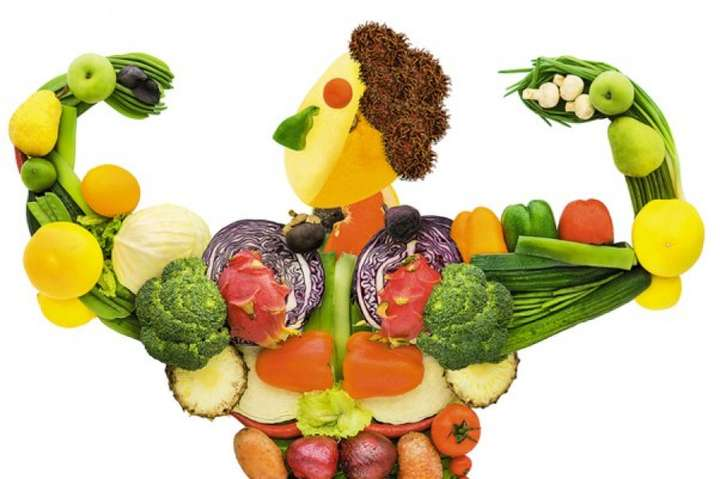

Що таке здорове харчування?
Це збалансоване споживання білків, вуглеводів, жирів, вітамінів і мікроелементів
з урахуванням добової фізіологічної потреби людини у харчових і біоактивних речовинах.
Щодня людина залежно від її віку, фізичної активності та впливу деяких інших факторів потребує певної кількості калорій за рахунок вживання корисних харчових продуктів, які одночасно з енергією постачають важливі речовини — білки, жири, вуглеводи, харчові волокна, вітаміни, мінерали, біофлавоноїди, пробіотики.
Користь від споживання натуральних рослинних та білкових продуктів доведено багаторічними дослідженнями із залученням мільйонів людей у різних країнах на всіх континентах. Вона полягає у зниженні ризику захворіти, покращенні якості та продовженні тривалості життя, якщо ми вибираємо здорове харчування.
Основним джерелом кухонної солі, цукру та жиру, зокрема трансжирних кислот, є харчові продукти, що пройшли технологічну обробку. Додавання зазначених інгредієнтів значно посилює смакові властивості їжі. Водночас тривале споживання солодкої, солоної та жирної їжі істотно підвищує ризик небезпечних захворювань серця та судин, діабету і раку.
Регулярне харчування, повільне споживання їжі у пристосованих для цього місцях позитивно впливає на функціональний стан органів травлення, запобігає появі надмірної маси тіла і пов’язаних із нею небезпечних для здоров’я станів — високого артеріального тиску, атеросклерозу та підвищення рівня глюкози у крові.
Достатнє вживання рідини є однією з обов’язкових умов для забезпечення належної фізичної та розумової активності людини. Вода, кава та чай мають бути основним джерелом рідини. Слід істотно обмежити вживання калорійних напоїв, зокрема солодких газованих, соків та соковмісних напоїв. Чим менше людина споживає алкогольних напоїв, тим краще для її здоров’я.
Харчова безпека — це питання спільної відповідальності, де зниження ризику отруєнь та кишкових інфекцій залежить також від споживача. Правила харчової безпеки включають всі етапи поводження з їжею до її споживання.
Активний спосіб життя має відомі переваги у забезпеченні здорового і тривалого життя. Щоденні, улюблені вами види фізичної активності, є найкращим варіантом дозвілля.
Змінити раціон за один день неможливо: головне послідовно йти до мети — тоді здорове харчування стане для вас природним.
Активний спосіб життя має відомі переваги у забезпеченні здорового і тривалого життя. Щоденні, улюблені вами види фізичної активності, є найкращим варіантом дозвілля.
Змінити раціон за один день неможливо: головне послідовно йти до мети — тоді здорове харчування стане для вас природним.
Рекомендації для здорового харчування
- Споживайте адекватну кількість калорій для задоволення власних потреб в енергії та основних поживних речовинах.
- Споживайте достатню кількість корисних харчових продуктів щодня: овочів, бобових, фруктів, цільних злаків, горіхів, насіння, яєць, нежирного м’яса, риби та молочних і кисломолочних продуктів.
- Уникайте частого споживання харчових продуктів і страв зі значним вмістом кухонної солі, цукру та жиру.
- Намагайтеся дотримуватись оптимального режиму харчування та набути здорових харчових звичок.
- Пийте достатньо рідини, вибирайте напої, які не містять багато калорій. Не починайте вживати алкоголь чи обмежте його споживання.
- Постійно і ретельно дотримуйтеся правил харчової безпеки, зокрема чистоти, вибирайте лише якісні та безпечні харчові продукти з належними умовами їхнього транспортування, зберігання та приготування.
- Намагайтеся більше рухатись і займатися фізичними вправами щодня.
Активний спосіб життя має відомі переваги у забезпеченні здорового і тривалого життя. Щоденні, улюблені вами види фізичної активності, є найкращим варіантом дозвілля.
Змінити раціон за один день неможливо: головне послідовно йти до мети — тоді здорове харчування стане для вас природним.
Продукти які слід назавжди виключити з раціону:
-
Перероблені м'ясні продукти
Ковбаса, сосиски, консерви та заморожені напівфабрикати містять величезну кількість солі, консервантів та іншої хімії. Але найшкідливіше в їхньому складі – насичені жири, які призводять до збільшення рівня "поганого " холестерину в крові.
-
Маргарин
Багато хто купує маргарин у цілях економії. Але цей замінник масла небезпечний тим, що до його складу входять трансжири, які викликають тромби в судинах і, як наслідок – інфаркти та інсульти.
-
Майонез
Майонез – найшкідливіший з усіх покупних соусів. Його регулярне вживання призводить до хвороб серця і судин, задишки, проблем з травленням і зайвої ваги.
-
Знежирені молочні продукти
Йогурти, молоко і сметана в 0% жирності можуть нести серйозну загрозу для серцево-судинної системи. Американські вчені вважають, що регулярне вживання нежирної їжі знижує еластичність судин і негативно позначається на згортанні крові.
-
Покупні мюслі
Крім корисних вівсяних пластівців, сухофруктів, горіхів і насіння, мюслі містять величезну кількість цукру і рослинних жирів, які можуть завдати шкоди людям, що мають проблеми із серцевим ритмом та які перенесли інфаркт.
Що таке БЖВ
Під абревіатурою БЖB полягає поняття про правильне співвідношення в нашій їжі білків, жирів та вуглеводів, а також взаємозв'язок цього співвідношення із загальною калорійністю. Співвідношення БЖB має значення як у стандартних тренуваннях, і у питанні оптимізації маси тіла.
Відразу хочемо звернути Вашу увагу на те, що БЖB не має жодного відношення до більшості дієт, які можна розглядати лише як зброю проти здоров'я, але не як інструмент схуднення чи набору ваги.
Найчастіше люди не думають про те, що, дотримуючись порад всіляких дієт, мало сформувати дефіцит калорій у нашому раціоні, потрібно ще й забезпечити організм достатньою кількістю необхідних мікро-і макроелементів. На практиці результат популярних дієт – це проблеми з суглобами, руйнування гормональної системи людини, порушення в роботі серцево-судинної системи, схуднення за рахунок скорочення м'язової маси і стрес для всього організму. Не дивно, що після закінчення цієї муки організм відразу почне повертати вагу, та ще й із запасом на випадок чергової кризи.
Але, повернемося до БЖB.
Усереднена формула співвідношення білків, жирів, вуглеводів:
- Білки - 15-20%
- Жири - 30%
- Вуглеводи - 55-60%
Варто зазначити що 30% жирів мають складатися з 10% жирів тваринного походження та 20% жирів рослинного походження.
Продукти з переважаючим вмістом:
Білків
- М'ясо
- Риба
- Птиця
- Яйця
- Бобові
- Молочні продукти
Жирів
- Риба(Жирна)
- Авокадо
- Горіхи
- Оливки
- Нерафіновані масла першого віджиму
Вуглеводів
- Овочі
- Фрукти
- Злакові
- Картопля
- Мед
Правила здорового харчування під час тренувань
Глікемічний індекс та глікемічне навантаження
Глікемічний індекс (ГІ) — це показник того, як продукт впливає на організм незалежно від його кількості.
Глікемічне навантаження (ГН) — залежить від маси продукту та вмісту вуглеводів.
ГІ та ГН не тотожні одне одному, але тісно пов’язані між собою. Слідкування за показниками індексу та навантаження необхідне для людей, які мають цукровий діабет або бажають схуднути.
Важливим є не тільки навантаження окремих продуктів, а й загальний показник. ГН за добу для здорової людини не повинно перевищувати 100 одиниць. Під час схуднення або при діабеті для нормалізації рівня інсуліну ГН повинно перевищувати не більше 60-80 одиниць на добу.
Чим вище ГН, тим вище підіймається рівень глюкози в крові, тим самим запускаючи інсулінову атаку.
Складання меню для схуднення, сушки або набору маси необхідно віддавати перевагу продуктам з низьким глікемічним індексом та високим загальним балом. Під час визначення загального балу враховується енергетична цінність продукту та баланс білків, жирів та вуглеводів. Тим, кому потрібно тримати вагу, краще складати меню з продуктів з низькими та середніми ГІ та ГН.
Показники глікемічного навантаження індексу:
- Високий - більше ніж 20
- Середній - від 11 до 19
- Низький - 11 та нижче.
Більш детальну інформацію стосовно ГІ та ГН, також про їх показники в окремих продуктах. Як застосовути на практиці ці знання Ви можете знайти за посиланням.
Як правильно розрахувати калорії?
Для початку поясню, що таке основний обмін (ОО) – це та мінімальна кількість енергії, яка на добу необхідна нашому організму для забезпечення нормальної життєдіяльності (кровообіг, дихання, підтримка температури тіла) в умовах повного спокою.
Простіше кажучи, коли ми спимо і практично не рухаємося, наш організм продовжує здійснювати досить трудомісткий процес: серце б'ється, печінка та нирки працюють, волосся та нігті ростуть, клітини оновлюються. Наш організм ніколи не спить і тому витрачає певну кількість кілокалорій.
Кожен із нас може розрахувати основний обмін самостійно. Існує кілька формул, особисто я волію використовувати у своїй роботі формулу Міффліна-Сан Жеора - вона більш сучасна і точна.
Розрахунок ОО для чоловіків: 10 × вага (кг) + 6,25 × зростання (см) – 5 × вік (г) + 5
Розрахунок ОО для жінок: 10 × вага (кг) + 6,25 × зріст (см) – 5 × вік (г) – 161
Отриманий результат – величина вашого обміну. Визначивши величину ГО, можна обчислити скільки ккал на добу вам потрібно для підтримки тіла при тому чи іншому рівні навантаження. Для цього ОО потрібно помножити на коефіцієнт фізичної активності (у всіх він різний):
- 1,2 – для малорухливих людей (тренувань мало, вони низької інтенсивності або взагалі відсутні);
- 1,3 – для людей із низькою активністю (легкі тренування 1–3 рази на тиждень);
- 1,5 – для помірковано активних людей (робота середньої тяжкості чи тренування помірної інтенсивності 3–5 днів на тиждень);
- 1,7 - для активних людей (фізична робота плюс тренування або інтенсивні тренування 6-7 разів на тиждень);
- 1,9 – для гранично активних людей (фізична робота плюс дуже інтенсивні заняття спортом).
Отримана величина – ваша добова потреба у ккал. З цієї цифри можна розрахувати потрібну калорійність вашого раціону.
Правильне харчування з метою підтримки поточної ваги
Для підтримання вашої сьогоднішньої ваги надходження калорій має дорівнювати розрахованим витратам.
Наприклад, ваш ОО дорівнює 1300 ккал, добова потреба 1887 ккал, ваш раціон має становити 1887 ккал.
Харчування з розрахунком БЖВ для схуднення
Для зменьшення ваги необхідно створити дефіцит ккал приблизно на 10–30% менше за добовий раціон (залежно від вашої поточної ваги).
Наприклад, ваш ОО дорівнює 1300 ккал, добова потреба 1887 ккал (коефіцієнт 1,3: тренування 1-3 рази на тиждень), ваш раціон для зниження ваги дорівнюватиме 1500 ккал (зменшили на 20%).
Необхідно пам'ятати, що отримана калорійність не повинна бути нижчою від ОО, в даному випадку нижче 1300 ккал. Так як організм щодня не отримуватиме в повному обсязі ту мінімальну кількість енергії, яка необхідна для забезпечення нормальної життєдіяльності. В результаті всі обмінні процеси організму сповільнюватимуться.
Харчування на тлі активного способу життя та тренувань, для набору м'язової маси.
Потрібний профіцит калорій. Наприклад, для того щоб набрати недостатню вагу, надлишок енергії складатиме близько 200 ккал/день (це як приклад, все індивідуально).
Рівень тестостерону є ключовим параметром, що впливає набір м'язової маси. Наукові дослідження показують, що співвідношення БЖУ в раціоні безпосередньо пов'язане з виробленням організмом цього гормону, тобто надлишок (або нестача) певних нутрієнтів безпосередньо впливає на тестостерон.
Цікавим висновком є те, що надмірно висока кількість білка в харчуванні може пригнічувати вироблення тестостерону. Це тим, що з розщепленні амінокислот утворюється ряд побічних продуктів (наприклад, аміак і молочна кислота) — є токсинами, із якими організму доводиться боротися.
Вищезгадана наукова робота показала і те, що низькожирові дієти пригнічують тестостерон. Атлети, у раціоні яких співвідношення жирів становило близько 10-15% калорійності, мали критично низький рівень тестостерону та інших стероїдних гормонів.
У свою чергу, максимальні цифри досягалися у випадку, коли на жир припадало 40-45% від калорійності, проте при цьому не йшлося про набір сухої маси. Тип жирних кислот також мав значення. Насичені та мононенасичені жири показували позитивний вплив, тоді як надлишок поліненасичених – негативний.
Нагадаємо, що до насичених відносяться тваринні жири та кокосова олія, до мононенасичених — оливкова олія та олії більшості горіхів, а до поліненасичених — кукурудзяна, соєва та соняшникова олія.
Якщо раціон атлета містить велику кількість омега-6 (соняшникова та кукурудзяна олії), організму потрібна підвищена кількість омега-3 для нейтралізації. У цьому випадку можна або приймати риб'ячий жир, або вживати рослинні олії, що містять омега-9 - у тому числі, оливкова олія та олія каноли.
Також наукове дослідження показало, що важливою є не цифра вмісту білка в раціоні, а співвідношення між білками та вуглеводами. Пропорція ¼ характеризувалася вищим рівнем тестостерону, ніж ½. Іншими словами, вуглеводів у раціоні при наборі м'язової маси має бути приблизно вдвічі більше, ніж білків.
Важливість вуглеводів пояснюється тим, що глікоген, що є головним паливом для мускулатури, синтезується організмом саме з вуглеводів. Сумарно в м'язах запасено близько 300-500 г цієї речовини - і значна частина витрачається під час силового тренування та відновлювального періоду.
При цьому краще дотримуватись вуглеводів із низьким глікемічним індексом — вони краще конвертуються в глікоген, а не в жир. У свою чергу вуглеводи з високим ГІ (наприклад, мальтодекстрин) можуть вживатися відразу після тренування - вони підвищують рівень інсуліну і зупиняють катаболічні процеси.
Максимальний рівень тестостерону спостерігався у тих спортсменів, співвідношення білків у раціоні яких становило близько 20-25%. Іншими словами, йдеться про 1.5-2.5 г білка на кг ваги тіла. Перевищення цих значення не тільки не несе додаткової користі для набору маси, але і може негативно позначитися на гормональному рівні.
Склад білка також має значення. Наприклад, вегетаріанцям необхідно стежити за наявністю в раціоні незамінних амінокислот – вони містяться переважно у м'ясі.